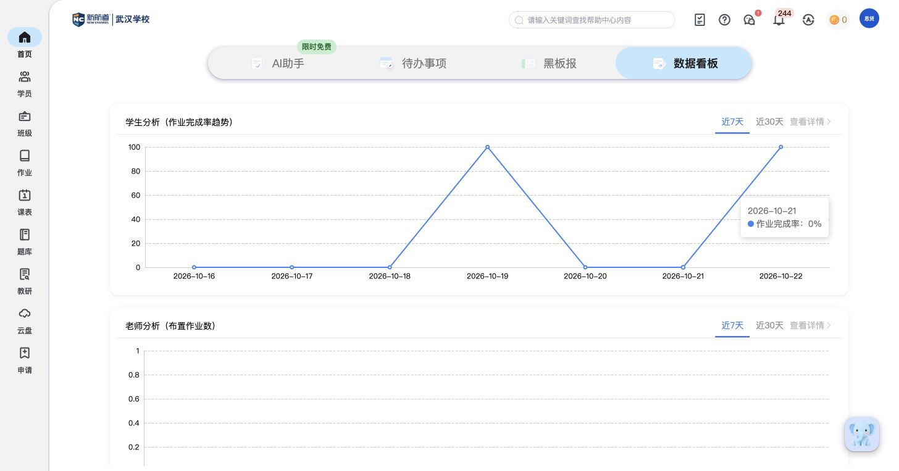

XX004核心教师端
教学数据看板
把学生学习表现和老师教学跟进情况汇总成趋势与明细。
教师端怎样实现
- 总览展示学生作业完成率趋势；详情可看作业完成率、平均练习时长和作业正确率。
- 学生明细把成绩、已上/剩余课时、反馈/回访、作业和词汇情况放在同一张表中，方便一起查看。
- 总览展示老师布置作业数；详情提供平均提分率、作业查阅率和作业批改率等指标。
- 老师明细可选在授学生数、课时数、未反馈数、课后未布置作业班级数等字段，帮助检查教学工作是否跟进。
- 总览可看近7天或近30天；详情可按日、周、月查看，并选择考试类型、班级等统计范围。
- 明细表可选择展示哪些字段，并提供数据导出。提分分析也有独立区域，目前没有数据样例。

原菜单说明：教师 · 教学数据看板
依据边界：学生分析已有数据行；老师分析缺明细样例，提分分析为空。老师字段依据实际表头设置记录；指标算法、更新规则及导出文件内容仍待确认。
对比自己的产品：是否能同时观察学习结果、练习投入和教学跟进，而不只是统计作业数量。